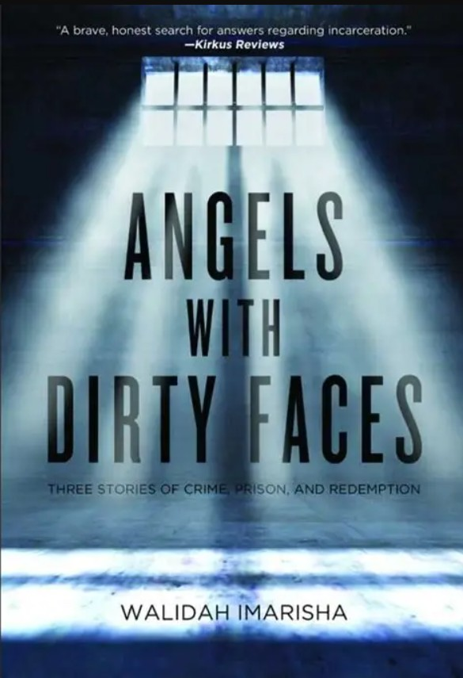

This creative nonfiction book by Portland writer and activist Walidah Imarisha is a poignant exploration of the prison-industrial complex and the lives shaped by it. Through the interconnected stories of Imarisha, her adopted brother Kakamia, and former Westies hitman Jimmy “Mac” McElroy, Angels With Dirty Faces examines the realities of incarceration in the American penal system alongside the cultural assumptions and social structures that allow cycles of harm and punishment to persist within it. This text is still as relevant as it was when it was published in 2016, blending memoir, biography, historical analysis, and social justice critique to deliver a powerful meditation on accountability, forgiveness, and the possibilities that can come through seeing the humanity of others.
“Sometimes people hurt each other. Horribly. And then what?” (Imarisha 21). This is the question at the core of Angels with Dirty Faces. Part memoir, part true crime, part historical and cultural analysis, the book's goal is not to seek out easy answers and empty platitudes–it’s not trying to find new slogans or trump cards to play while sitting around the table at Thanksgiving. Instead, Imarisha asks readers to grapple with the question of whether the worst thing a person has done should really be what defines the entirety of their humanity.
The book opens with Imarisha, an anti-prison organizer, entering a prison processing room preparing for a visit with one of the subjects of the book, Mac. While sitting in this in-between space she describes mothers waiting to see their sons, women trying to wrangle their children, and young boys playing as they wait to see their father (2). These opening images and observations could simply be looked at as effectively setting a scene. However, I think they also serve as a subtle microcosm of the book’s primary commitment: to see incarcerated people beyond that label–to understand them not as faceless, obscured entities who need to be locked away and forgotten, but people whose lives still carry an active impact in communities beyond prison walls.
Imarisha soon follows this scene up by pointing to the numerous injustices and structural problems within the American penal system throughout history, specifically highlighting the ways incarceration strips people of their dignity and how it disproportionately impacts people from Black communities. She notes that many incarcerated people are serving sentences for nonviolent offenses, while others have been wrongfully convicted altogether. But while the book acknowledges the importance of these critiques, she wants to push beyond them to question how we think of incarcerated people altogether. She writes, “I know many innocent prisoners, wrongfully convicted. It would be easier to argue for their release, and to challenge prisons solely based on their experiences. Harder, however, is to take stories of people who are in some way guilty by their own admission” (16). By shifting our focus towards people who have caused genuine harm, Imarisha pushes readers beyond simple questions of innocence and guilt through systemic ideology and towards a more difficult conversation about accountability, punishment, and human dignity.
While the book examines the prison-industrial complex on a national scale, it is also deeply rooted in Imarisha's experience growing up as a Black girl in Springfield, Oregon. Her relationship with her adopted brother Kakamia, which began when she purchased one of his artworks while he was incarcerated, becomes the emotional center of the book. It reflects her search for community in a state whose history of racial exclusion continues to shape Black experiences of belonging. As she writes, “I was searching for a connection to my Black heritage… I thought I was just buying some Afrocentric work to decorate my room. I ended up mail-ordering a brother” (22). Rather than treating Kakamia as an abstract example in a debate about prisons, Imarisha presents him as a brother, an artist, a mentor, a friend, and a major part of her support structure as she grappled with her own questions of identity.
As she goes through the stories of Kakamia and Mac as well as her own experience as a survivor of sexual assault, she wants readers to grapple with difficult questions about what justice actually looks like. She writes, “The pieces of the larger whole I hope to bring are the stories of angels with dirty faces. The capriciousness of fate. The idea that every person has the capacity to salvage their tattered humanity, even in the moment before they take their last breath” (231). The book never ignores the harm these individuals have caused, but it also actively works to resist reducing them to monsters defined solely by what led to their incarceration. At the end of her section of the book she writes, “Any movements for justice where we do not see the ways that larger societal oppression is replicated by individuals we know and even sometimes love—where we do not create mechanisms to address serious harm that is done within our communities—achieves no real justice at all. Instead, we just reproduce the brutality of the larger system” (138). Imarisha insists on acknowledging the humanity of incarcerated people, challenging readers to consider whether systems built around carceral and capital punishment can adequately address not only the possibilities of rehabilitation, but also the needs of the survivors of violent crimes.
Angels with Dirty Faces expands our perception about what Oregon literature can be. By centering Black experiences, incarcerated people, and survivors of violence, Imarisha highlights communities and perspectives that are often obscured or absent from traditional narratives about our state and our nation while encouraging readers to imagine more humane approaches to justice and accountability.
Walidah Imarisha is an author, poet, activist, and educator whose work explores race, gender, state violence, and social justice. In 2017, she received the Oregon Book Award for Nonfiction for her work on Angels with Dirty Faces. In addition to her nonfiction writing, she published a poetry collection Scars/Stars (2013) and co-edited the anthologies Octavia's Brood: Science Fiction Stories from Social Justice Movements (2015) and Another World Is Possible (2001). Imarisha currently serves as Director of the Center for Black Studies and Associate Professor in the Black Studies Department at Portland State University. She has also worked as a public scholar with Oregon Humanities' Conversation Project, presenting on topics including Oregon Black history and the state's legacy of racism.
Walidah Imarisha, Scars/Stars (2013)
- Poetry collection by Imarisha on resilience and healing
Emmett Wheatfal, Our Scarlett Blue Wounds (2019)
- Poetry collection by fellow Portland poet exploring love and hope in the face of structural racism
Emilly Prado, Funeral For Flaca (2021)
- Another great Portland author and her memoir on identity trauma, and belonging.
